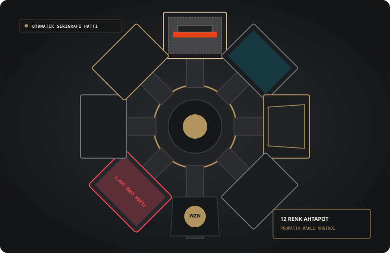
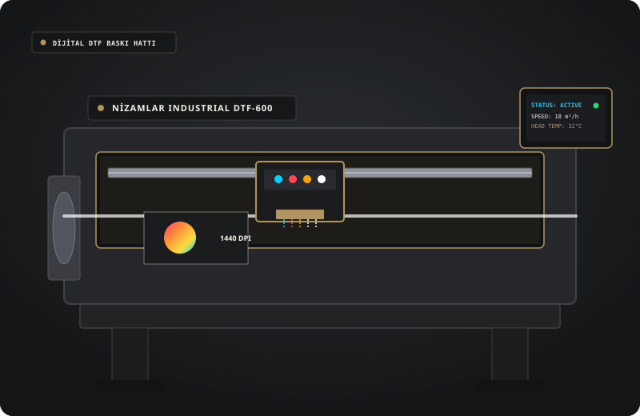
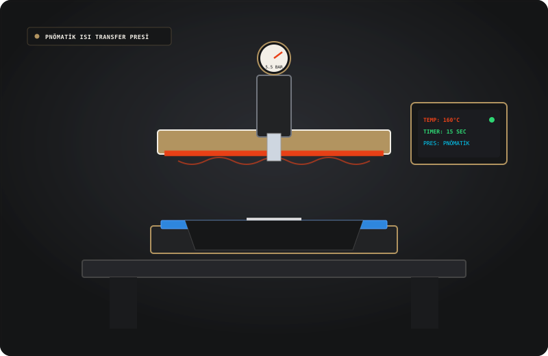

Endüstriyel Teknoloji &
Gelişmiş Makine Parkuru
Otomatik döner serigrafi ahtapotlarından yeni nesil rulo DTF sistemlerine ve hassas kalıphane pozlama ünitelerine kadar üretim altyapımız.
Temsili Donanım & Teknoloji Vitrini: Bu sayfada yer alan animasyonlu şemalar ve teknik veriler, Nizamlar Baskı üretim hatlarının endüstriyel standartlarını ve çalışma prensiplerini temsil etmektedir.
Yüksek Hassasiyetli Üretim Hatları
Tesisimizde kullanılan endüstriyel makineler düzenli olarak kalibre edilir; mikron düzeyinde renk hizalaması ve standart kalite sağlanır.

Otomatik Döner Serigrafi Ahtapotu
Çok renkli ve yüksek tirajlı konfeksiyon parça baskıları için tasarlanmış pnömatik rakle sistemli endüstriyel serigrafi ünitesi.
| Baskı İstasyonu: | 12 Renk / 14 Tabla Kapasitesi |
| Maks. Baskı Alanı: | 50 x 70 cm Geniş Format |
| Boya Uyumu: | Su Bazlı, Plastizol, Deşarj, Kabartma |
| Kurutma Sistemi: | İstasyon Arası Flaş UV / IR Kurutucular |

Endüstriyel DTF Film & Tozlama Hattı
CMYK ve beyaz astarı eş zamanlı basan, otomatik toz serpme, titreşim ve tünel eritme fırını entegreli rulo besleme sistemi.
| Baskı Kafası: | Mikro Piezo Çift Kafa Endüstriyel Modül |
| Baskı Genişliği: | 60 cm Rulo Taşıyıcı PET Film |
| Çözünürlük: | 1440 x 2880 DPI Fotoğraf Kalitesi |
| Tutkal Fırını: | Ayarlanabilir Dijital Sıcaklık Kontrolü |

Pnömatik Yüksek Basınçlı Transfer Presi
DTF ve transfer baskıların kumaşa homojen ısı ve eşit basınçla sabitlenmesini sağlayan dijital zaman ayarlı çift tabla pres ünitesi.
| Pres Basıncı: | 5 - 8 Bar Pnömatik Otomatik Baskı |
| Isı Kapasitesi: | 160°C - 200°C Hassas PID Termostat |
| Tabla Tipi: | Çift İstasyonlu Hızlı Değişim Tablası |
| Zamanlama: | Otomatik Dijital Geri Sayım & Piston Açılışı |

Konveyörlü Tünel Fiksaj Fırını
Kumaş üzerine aktarılan boyanın liflere tamamen nüfuz etmesini ve yıkama dayanımı kazanmasını sağlayan hava sirkülasyonlu fırın.
| Isı Aralığı: | 50°C - 200°C Hassas Termostat |
| Bant Genişliği: | 120 cm Çift Hat Konveyör |
| Hava Sirkülasyonu: | Dengeli Sıcak Hava Akımı & Duman Tahliye |
| Uyum: | Su Bazlı & Plastizol Tam Kürleme |

UV LED Kalıp Pozlama ve Otomatik Yıkama
Yüksek çözünürlüklü tram noktalarının ve ince çizgilerin ipeğe kusursuz aktarılmasını sağlayan vakumlu pozlama sistemi.
| Işık Kaynağı: | Yüksek Güçlü UV LED Vakum Tablası |
| İpek Numaraları: | 43T ile 120T arası hassas gergi |
| Yıkama Kabini: | Basınçlı Kapalı Devre Su Püskürtme |
| Hassasiyet: | 0.1 mm Çizgi Netliği |

D65 Işık Kabini & Spektrofotometre
Her partide basılan ürünlerin uluslararası Pantone standartlarına ve şahit numuneye birebir uyumunu denetleyen optik laboratuvar ünitesi.
| Işık Kaynakları: | D65 (Gün Işığı), TL84, UV, Incandescent |
| Renk Ölçümü: | Delta-E < 0.5 Spektrofotometrik Tolerans |
| Kontrol Masası: | Işıklı Eğimli Parça Muayene Tablası |
| Raporlama: | Parti Bazlı Dijital Onay Arşivi |